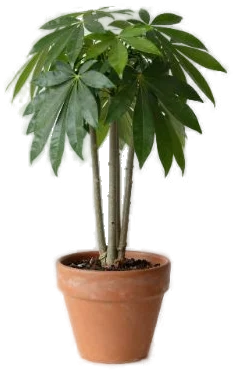

Пахира
Характер
Тропическое дерево с болот, речных берегов и из тропических лесов от Мексики до Боливии и севера Бразилии (NC State). В природе вырастает до 18–20 м (NC State, RHS), а в горшке обычно до 1,5 м (RHS) или 1,8–2,4 м (NC State). Чаще всего ее продают с несколькими стволами, заплетенными в косичку (RHS, NC State). По-английски ее зовут money tree (NC State, ASPCA), так что «денежным деревом» иногда называют и ее. Но с толстянкой не путай: пахира — совсем другое растение, из семейства мальвовых (NC State). По сложности источники расходятся: Iowa State включает ее в список неприхотливых растений для новичков, а NC State оценивает уход как средний.
Свет
Яркий рассеянный свет или полутень (NC State, RHS). Прямое солнце может обжечь листья (NC State), так что на южном окне притени. RHS в карточке допускает даже тень, но для выращивания в комнате советует именно яркое место или полутень.
Полив
Грунт держи слегка влажным, но не мокрым: оба источника пишут «влажный, но хорошо дренированный» (NC State, RHS). Стоячую воду пахира не переносит — от нее гниют корни (NC State), поэтому нужен горшок с дренажным отверстием, а воду из поддона сливай. Пересушишь грунт — начнут опадать листья (NC State). Точной частоты полива и зимнего режима в наших источниках нет: ориентируйся на грунт, а не на календарь.
Влажность
Любит влажный воздух (NC State). Если листья желтеют, одна из возможных причин — сухой воздух (NC State). Конкретных способов поднять влажность именно для пахиры источники не дают.
Температура
Комфортно при 18–24 °C (NC State). Холода не любит: RHS дает минимум 10–15 °C, NC State советует занести растение в дом, пока не похолодало до 7 °C — нижняя граница у источников расходится. Летом можно вынести на балкон или во двор, но в место, укрытое от ветра (RHS, NC State).
Грунт и пересадка
Рыхлый грунт, который хорошо пропускает воду: NC State называет смесь торфа, перлита, суглинка или песка, RHS — открытый, хорошо дренированный компост (тип почвы в карточке — суглинок). Сроков пересадки и графика подкормок в наших источниках нет; NC State лишь отмечает, что листья могут желтеть от бедного грунта. Если кормишь — удобрение по инструкции на упаковке.
Какой горшок нужен при пересадке →
Состав грунта: калькулятор смеси →
Размножение
Черенками: NC State пишет про зеленые, RHS — про полуодревесневшие. Еще оба источника называют отводки (RHS — воздушные) и семена. Только семян от своей пахиры не жди: дома она почти никогда не плодоносит (NC State). Разрослась — весной укороти побеги, насколько нужно (RHS).
Частые беды
- Опадают листья — грунт пересох (NC State)
- Желтеют листья — сухой воздух или бедный грунт (NC State)
- Обожженные листья — прямое солнце (NC State)
- Гниют корни — стоячая вода в горшке, плохой дренаж (NC State)
- Пятна на листьях — пятнистость листьев (RHS), антракноз (NC State)
- Белый мучнистый налет — мучнистая роса (NC State)
- Вредители — тля, щитовка (NC State, RHS), мучнистый червец, грибные комарики (NC State), паутинный клещ (RHS)
Подробные разборы:
Интересно
- В природе пахира растет по болотам, эстуариям и берегам рек (NC State) — ее видовое имя aquatica тут вполне к месту.
- Заплетать молодые стволы в косичку начали на Тайване, где пахира стала популярной в 1980-х; считалось, что косичка «запирает» удачу (NC State).
- Цветок у пахиры крупный, кремовый, с 200–250 тычинками с красными кончиками, пахнет ночью и живет всего один день. Но дома и у плетеных растений цветения почти не бывает (NC State).
Пахира и кошки
Не ядовито
По базе ASPCA (карточка Money Tree, Pachira aquatica, семейство Malvaceae) нетоксична для кошек, собак и лошадей. При этом ASPCA в той же карточке перечисляет возможные признаки, если питомец наестся: тошнота, рвота, жидкий стул. NC State отмечает пахиру как проблему для кошек: легкое или умеренное расстройство пищеварения (рвота, диарея, слюнотечение), ядовитая часть — семена, а у комнатной пахиры их не бывает. Не давай коту грызть листья, при симптомах — к ветеринару.
Источники
Факты взяты из справочников университетских служб, RHS и базы ASPCA. Где источники расходятся, мы так и пишем.